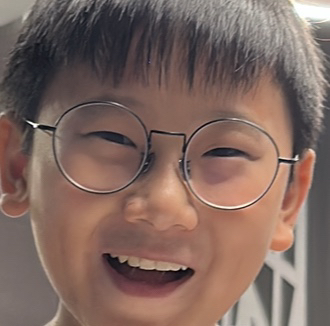

Once upon a time, in a quaint little town called Starville, there lived a curious and imaginative kid named Ender. Ender was known for his wide, twinkling eyes that sparkled like stars, and his heart was as adventurous as the vast universe itself.
From a young age, Ender had a fascination with the night sky. Every evening, he would sneak out to a small hill on the outskirts of town, gazing at the stars that painted the dark canvas above him. He dreamed of exploring distant galaxies and meeting friendly aliens on faraway planets.
One evening, as Ender lay on the hill, his eyes fixed on the constellations, a shooting star streaked across the sky. With a hopeful heart, he made a secret wish – a wish to embark on a thrilling cosmic journey beyond his wildest dreams.
The next morning, as the sun painted the sky with hues of orange and pink, Ender received a mysterious letter with no sender's name. Curiosity dancing in his eyes, he opened it to find an intricately drawn treasure map, pointing towards an uncharted realm called "The Celestial Kingdom."
With his heart pounding like the beat of a cosmic drum, Ender knew he had to follow the map's clues and uncover the mysteries of the Celestial Kingdom. Armed with courage, a backpack filled with snacks, and his loyal furry friend, Comet, by his side, Ender set off on an extraordinary adventure.
As he journeyed through dense forests and crossed roaring rivers, Ender encountered peculiar creatures that seemed to be guardians of the kingdom. They spoke a language of twinkling melodies and welcomed him with open arms, sensing the pure heart of a young explorer.
The map led Ender through shimmering stardust caves and majestic mountains made of moonbeams. He solved riddles, faced challenges, and learned valuable lessons about bravery, friendship, and the vastness of the cosmos.
In the heart of the Celestial Kingdom, Ender discovered the most breathtaking sight he had ever seen—a shimmering portal that seemed to connect to a million stars. It was the gateway to the unknown, waiting for a worthy traveler to step through.
With a deep breath and a heart full of gratitude, Ender took a step forward, feeling the embrace of the universe welcoming him like an old friend. Through the portal, he soared among celestial wonders, soaring among planets, and dancing with comets. The stars whispered secrets into his ears, filling his mind with knowledge from the furthest corners of the cosmos.
Time seemed to dance in harmony with Ender's adventure, and soon, it was time for him to return to Starville. As he stepped back through the portal, he knew he would never be the same again. The magic of the Celestial Kingdom had left its mark on his soul, and the night sky held new stories for him to share with the world.
Back in his hometown, Ender became known as the "Star Child" – the brave young explorer who danced among the stars. He shared his incredible journey with the townsfolk, igniting the spirit of adventure and wonder in everyone's hearts.
From that day on, whenever someone gazed at the night sky, they would think of Ender and his cosmic voyage. The young boy with twinkling eyes had shown them that within each of us lies the potential for grand adventures, waiting to be discovered in the boundless expanse of imagination and the vastness of the universe. And so, Ender's story lived on as an enchanting tale, inspiring generations to reach for the stars and embrace the magic that lies beyond.